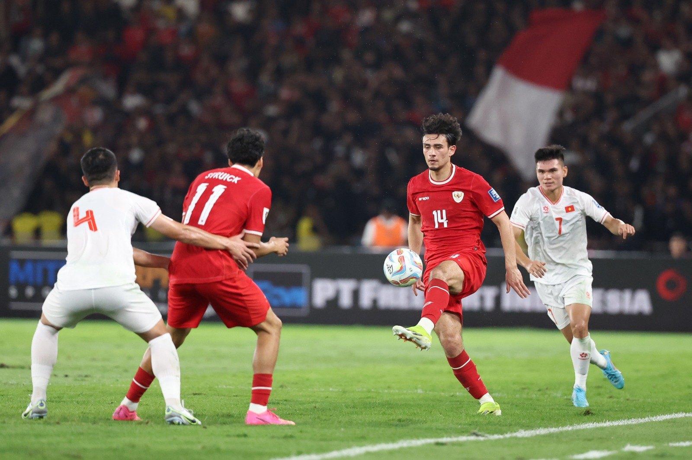

Cetak Sejarah, Indonesia Lolos ke 8 Besar Piala Asia U-23 2024
Tim U-23 Indonesia mencetak sejarah di Piala Asia U-23 2024. Sejarah diukir Garuda Muda yang berstatus tim debutan dengan lolos ke babak pertama final untuk pertama kalinya.Kepastian ini didapat setelah mengalahkan Yordania U-23 dengan skor telak 1-4 pada laga ketiga atau partai terakhir Grup A di Stadion Abdullah bin Khalifa, Doha, Qatar, Minggu (21/4).
Dengan ini Indonesia berstatus sebagai runner up grup A akan melawan juara grup B antara Jepang atau Korea Selatan. Kedua tim ini akan berduel pada Senin (22/4) untuk memperebutkan status juara grup B. Pada laga ini sebenarnya Indonesia hanya butuh hasil imbang untuk lolos. Garuda Muda berhasil membuka keunggulan pada menit 23 melalui titik putih yang dieksekusi dengan baik oleh Marselino Ferdinan. Penalti diberikan wasit Ammar Ashkanani asal Kuwait setelah salah satu pemain Yordania melakukan pelanggaran terhadap Rafael Struick. Skor 0-1 untuk Indonesia.
Memasuki menit 40, Indonesia berhasil menambah keunggulan menjadi 0-2 lewat Witan Sulaeman. Witan melepaskan sepakan melengkung yang tidak bisa dijangkau oleh kiper Yordania, Ahmad Juaidi. Unggul dua gol tidak membuat Indonesia mengendurkan serangan di babak kedua. Anak asuh Shin Tae-yong terus berupaya mendapatkan gol ketiga. Upaya itu berbuah manis setelah Marselino Ferdinan mencatat brace di menit 70 sekaligus membawa Garuda Muda menjauh 0-3. Setelah unggul jauh, Indonesia U-23 sedikit lengah setelah Justin Hubner malah memasukkan bola ke gawang sendiri sehingga skor berubah menjadi 1-3 pada menit 79. Namun, tidak lama kemudian, atau tepatnya menit 86, skor kembali berubah 1-4 untuk Indonesia. Gol keempat Garuda Muda dicetak oleh Komang Teguh.
Shin Tae-yong Panggil 22 Pemain untuk Pertandingan Lawan Irak dan Filipina
Pelatih Shin Tae-yong memanggil 22 pemain untuk dua pertandingan Kualifikasi Piala Dunia 2026 melawan Irak dan Filipina. Timnas Indonesia akan menjamu Irak dan Filipina pada 6 dan 11 Juni 2024 di Stadion Utama Gelora Bung Karno, Senayan, Jakarta.
Dua laga ini sangat penting bagi skuad Garuda. Karena jika setidaknya mampu meraih satu kemenangan akan lolos ke putaran ketiga Kualifikasi Piala Dunia 2026 mendatang. Pada kesempatan ini, pelatih Shin Tae-yong tidak memanggil Elkan Baggott dan Marc Klok. Selain itu juga tidak ada Edo Febriansah, Wahyu Prasetyo, Witan Sulaeman, Rachmat Irianto, dan Hokky Caraka.

Sementara itu, nama-nama langganan seperti Asnawi Mangkualam, Rizky Ridho, Pratama Arhan, Marselino Ferdinan, Justin Hubner, Nathan Tjoe-A-On, Ivar Jenner dan lain-lain masih tetap menghiasi skuad Garuda. Timnas Indonesia saat ini berada di peringkat kedua Grup F Kualifikasi Piala Dunia 2026 dengan mengemas tujuh poin dari empat pertandingan.
*Daftar 22 pemain timnas Indonesia versus Irak dan Filipina:
1. Adi Satryo (PSIS)
2. Ernando Ari (Persebaya)
3. Jordi Amat (Johor Darul Takzim)4. Justin Hubner (Cerezo Osaka)
5. Rizky Ridho (Persija)
6. Muhammad Ferrari (Persija)
7. Jay Idzes (Venezia FC)
8. Pratama Arhan (Suwon FC)
9. Shayne Pattyama (KAS Eupen)
10. Sandy Walsh (KV Machelen)
11. Asnawi Mangkualam (Port FC)
12. Nathan Tjoe-A-On (Swansea FC)
13. Yance Sayuri (PSM)
14. Yacob Sayuri (PSM)
15. Thom Haye (SC Heerenveen)
16. Ricky Kambuaya (Dewa United)
17. Ivar Jenner (Jong Utrecht)
18. Marselino Ferdinan (KMSK Deinze)
19. Dimas Drajad (Persikabo 1973)
20. Ragnar Oratmangoen (FC Groningen)
21. Egy Maulana (Dewa United)
22. Rafael Struick (ADO Den Haag)
Timnas Indonesia Jalani Latihan Perdana
Timnas Indonesia menjalani Latihan perdana untuk persiapan menghadapi Irak (6/6) dan Filipina (11/6) pada lanjutan laga Grup F Kualifikasi Piala Dunia 2026 zona Asia di Stadion Utama Gelora Bung Karno, Jakarta. Selain itu, skuad Garuda akan beruji coba melawan Tanzania di Stadion Madya, Jakarta, Minggu (2/6).
Latihan perdana digelar di Lapangan A dan B Senayan, Jakarta, Selasa (28/5). Latihan ini diikuti oleh 18 pemain. Empat pemain yang belum bergabung pada latihan perdana ini di antaranya Pratama Arhan (Suwon FC), Jordi Amat (Johor Darul Ta'zim), Justin Hubner (Cerezo Osaka), dan Jay Idzes (Venezia). "Para pemain timnas sudah kumpul sejak kemarin, ada juga yang datang malam. Ini baru latihan pertama, tadi siang ada latihan core juga di hotel dan ini pertama kali latihan di lapangan," kata pelatih timnas Indonesia, Shin Tae-yong.
"Untuk Arhan, karena pertandingan terakhir di K-League dia dapat kartu merah dan hari ini baru ada keputusan dia dapat sanksi dilarang bermain dua pertandingan, atau sama sekali tidak ada sanksi, jadi bisa saja besok atau lusa dia berangkat dari Korea Selatan ke Indonesia. Untuk Jordi (Amat) akan bergabung tanggal 31 (Mei)," tambahnya.
Sementara itu, bek Venezia, Jay Idzes, belum bergabung karena harus mengikuti final play-off promosi ke Serie-A Italia melawan Cremonese pada 31 Mei dan 3 Juni. "Jadi Jay Idzes baru akan sampai di Indonesia pada 5 Juni. Jadi untuk tanggal 6 pertandingan lawan Irak, Jay tidak akan bermain. Lalu, Justin (Hubner) akan datang ke Indonesia setelah bermain di J-League tanggal 2 Juni," jelas pelatih asal Korea Selatan tersebut.
Terkait pertandingan melawan Tanzania, Shin Tae-yong ingin melihat kondisi para pemain, apalagi rata-rata pemain baru saja menyelesaikan kompetisi bersama klub. “Para pemain banyak yang berlibur mulai dari liga di Eropa, liga Indonesia pun sama banyaknya yang beristirahat, pasti performa pertandingan menurun. Memang pas juga pikiran saya dan pikiran PSSI, jadi akhirnya kita ambil pertandingan lawan Tanzania, di luar hasil, tujuannya hanya akan mengecek kondisi para pemain seperti apa,” tukas Shin Tae-yong.
PSSI Merampungkan Kursus Refer System Tahap Ketiga
Instruktur Wasit AFC, Raymond Olivier dalam kursus sistem refer untuk para penilai wasit yang diinisiasi oleh Departemen Perwasitan PSSI, menegaskan kalau sistem ini akan sangat membantu kinerja perwasitan di Indonesia. Hal itu dikemukakannya di penghujung kegiatan, Senin (27/5). Kegiatan ini sudah berlangsung sejak tanggal 23 Mei 2024. Kegiatan ini diikuti oleh 28 Referee Assessor. Salah satu anggota Komite Eksekutif PSSI Rudi Yulianto menyempatkan hadir pada acara ini, sekaligus menutupnya. Selain itu ada Wakil Ketua Komite Wasit PSSI Yoshimi Ogawa, dan Departement Wasit PSSI Pratap Singh.
Ini adalah ketiga kalinya Departemen Perwasitan PSSI mengadakan acara serupa. Pada tahap ketiga ini materi yang diberikan seperti bagaimana menilai sebuah keputusan wasit dalam sebuah pertandingan, review serta analisa pertandingan, VAR protocol, Amandemen LOTG 2024/2025, menganalisis kinerja wasit dengan KMI (Key Match Incident) serta kompetensi teknisnya, dan lain-lainnya.
“Saya membantu federasi sepak bola Indonesia, PSSI dengan sistem penilaian Referee Assessor yang baru. Sebagaimana yang telah dijelaskan oleh Mr. Yoshimi Ogawa. Refer System adalah sistem terintegrasi yang memungkinkan secara independen menganalisa lebih dari 80 kompetensi berbeda dari performa wasit,” bukanya Raymond.
Refer System adalah sistem penanda otomatis. Sistem ini memungkinkan untuk mengevaluasi secara berkala performa para wasit untuk membantu mengembangkan performa mereka. Sistem ini juga menggabungkan materi latihan, untuk terus dilakukan. “Bukan hanya untuk melatih para wasit dan instruktur, tapi juga mengedukasi klub dan media dengan infiormasi yang kami miliki. Dengan demikian akan membantu membangun pemahaman yang sama mengenai Keputusan yang dibuat para wasit,” ucap Raymond.
Untuk PSSI, dia dan tim membantu untuk menyediakan semua data laporan dari semua wasit, insiden yang terjadi. “Membantu memberikan feedback siapa saja wasit yang tampil baik dan siapa wasit yang membutuhkan bantuan untuk meningkatkan performa mereka. Tapi yang terpenting, sistem ini memungkinkan kita untuk mengidentifikasi para wasit yang bertugas di berbagai pertandingan,” jelasnya. “Kami juga memiliki kesempatan lebih sering bekerja sama dengan klub-klub di La Liga 1 untuk mendapatkan feedback (masukan) berdasarkan pertandingan mereka. Bisa jadi keputusan untuk menjawab beberapa permasalahan sebagai referensi berdasar pada situasi serupa.
Raymond juga menilai, selama kursus, para peserta sangat antusias dan aktif bertanya serta banyak memberikan masukan. “Sesi (kelas) ini sangat bagus, mereka (peserta) sangat aktif dengan semangat belajar yang tinggi. Saya sangat terkesan dengan level partisipasi di ruang kelas kami serta bagaimana mereka berusaha meningkatkan pemahaman mereka. Jadi kami menjalani kelas tatap muka lalu dilanjutkan dengan kelas online untuk memperkuat materi yang telah dipelajari,” ungkapnya
“Bagi saya PSSI melakukan pekerjaan yang sangat baik dengan memastikan semua orang siap untuk memulai musim baru,” tutupnya.
Sambutan untuk Kedatangan Tim U-23 Indonesia

Tim U-23 Indonesia tiba di Bandara Soekarno Hatta pada Sabtu (11/5). Pada momen ini, Garuda Muda mendarat dari Paris pada pukul 06.40 WIB. Begitu keluar dari pintu kedatangan, seluruh pemain dan pelatih disambut dan dikalungi bunga oleh anggota Komite Eksekutif PSSI, Arya Sinulingga dan Muhammad, Sekjen Yunus Nusi.
Puluhan suporter tim U-23 Indonesia juga datang langsung dengan meneriakkan yel-yel dan semangat. Mereka juga membentangkan spanduk sambutan dan terimakasih kepada pemain yang telah berjuang di Piala Asia U-23 2024 dan play-off Olimpiade Paris 2024. Shin Tae-yong mengucapkan terimakasih kepada PSSI dan sambutan fans yang telah datang di bandara.
"Untuk pertandingan terakhir memang benar-benar pemain bekerja keras sangat kerja maksimal," ujar Shin Tae-yong.
"Tapi dengan adanya keputusan yang tidak adil dari wasit itu yang saya tidak bisa menerimanya," tambahnya. Shin Tae-yong pada laga Indonesia versus Guinea harus diusir keluar oleh wasit Francois Letexier. Ia menerima dua kartu kuning ketika memprotes penalti kedua Guinea karena pelanggaran Alfeandra Dewangga di kotak penalti. "Beberapa kali saya memutar video pertandingan tapi tetap juga ada kesalahan dari wasit itu yang sangat disayangkan. Apa yang dirasakan ini pasti juga dengan fans sepak bola Indonesia sama," jelasnya. Meski gagal meraih tiket Olimpiade 2024 setelah dikalahkan Guinea, para pemain Indonesia telah berjuang hingga batas maksimal.
Referensi/Link Web:
pssi.org